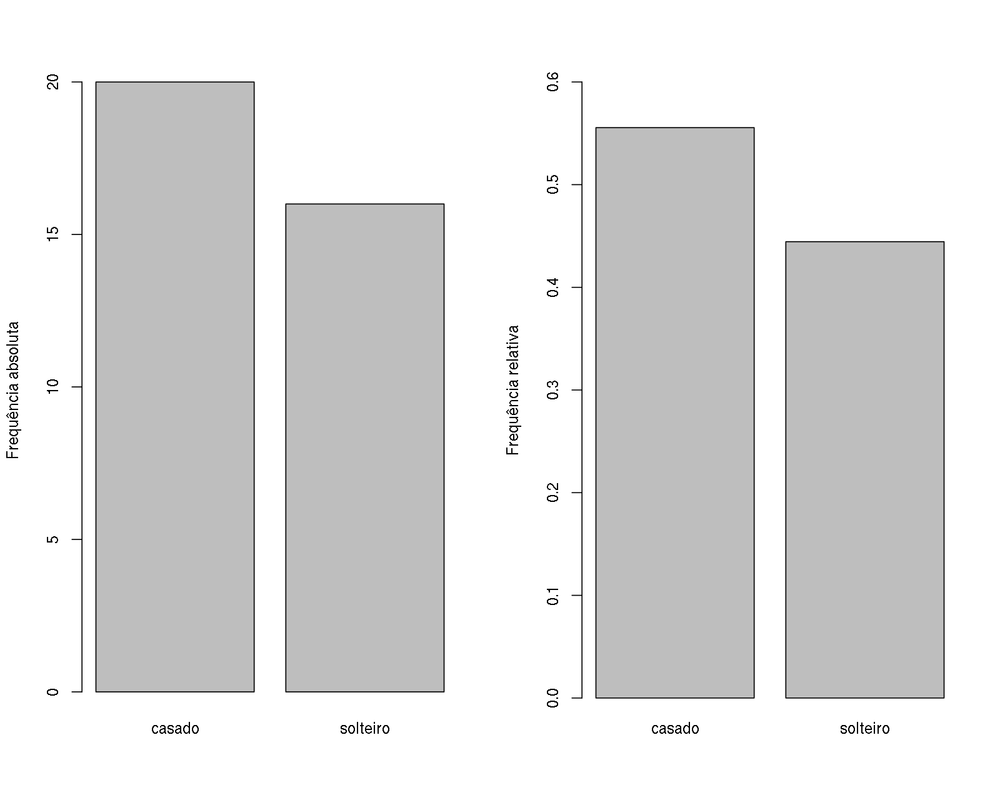
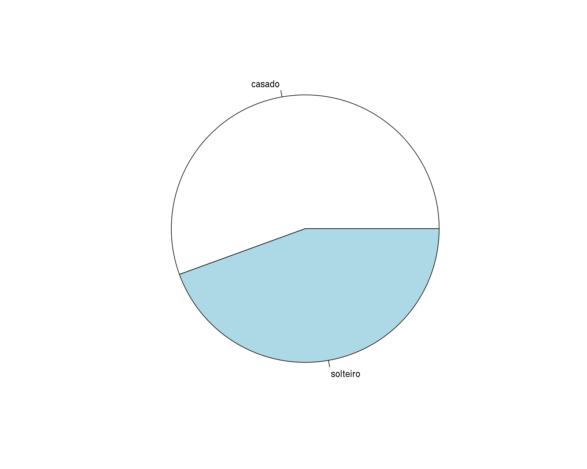
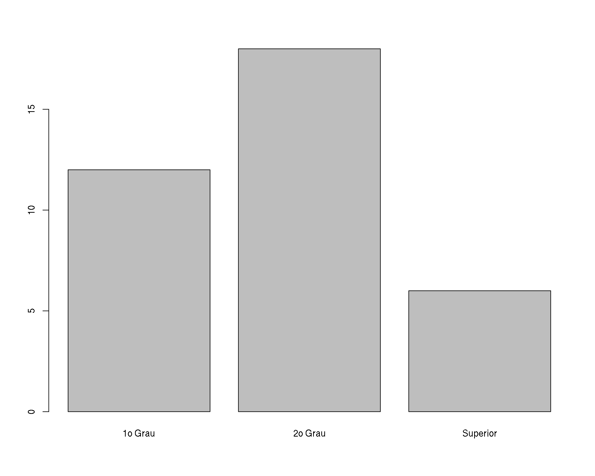
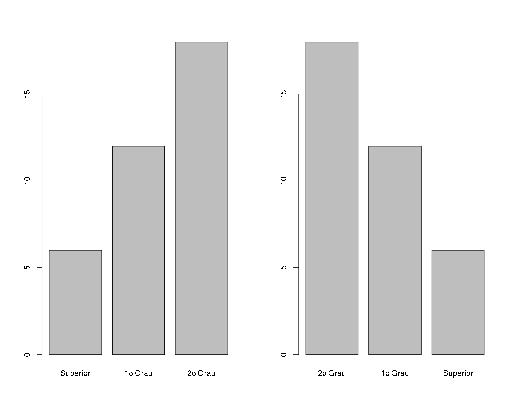
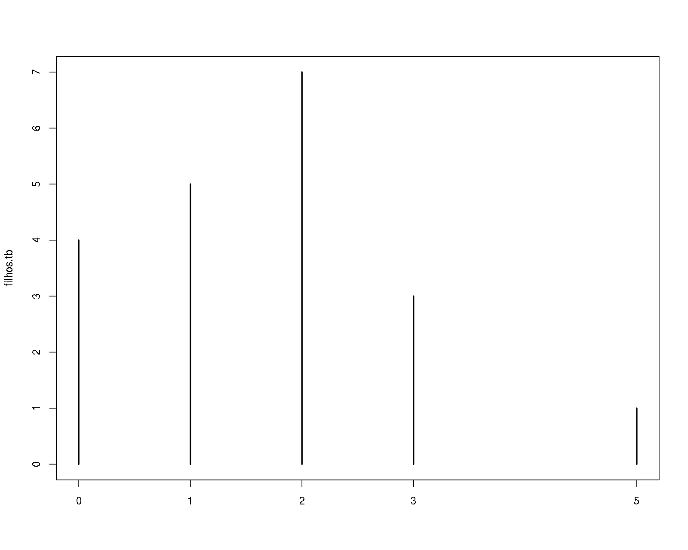
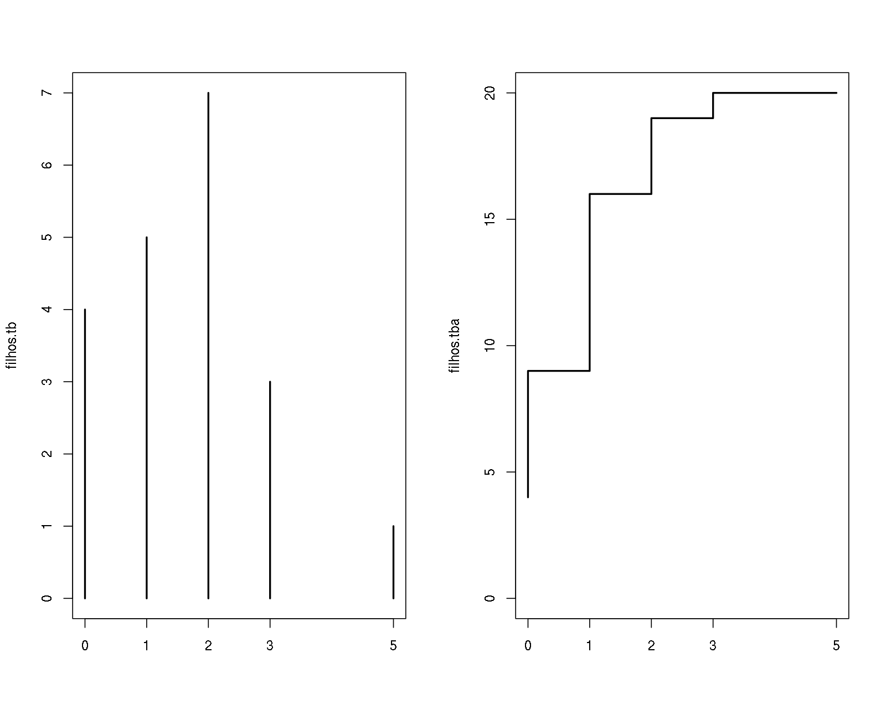

Análise exploratória de dados
Fernando de Pol Mayer (LEG/UFPR)
Introdução
Nesta sessão vamos ver alguns (mas não todos!) métodos para fazer uma análise exploratória descritiva de um conjunto de dados.
Uma boa forma de iniciar uma análise descritiva adequada é verificar os tipos de de variáveis disponíveis.
Uma equação:
\[ P[Y = y] = \frac{e^{-\lambda} \lambda^y}{y!} \]
Variáveis
Quando fazemos uma amostragem, coletamos não apenas a informação sobre a característica de interesse, mas diversas outras informações que auxiliarão no entendimento desta característica.
Cada uma das características da população amostrada, como peso, altura, sexo ou idade, é denominada de uma variável.
As variáveis podem assumir diferentes valores, que basicamente podem ser separados em
- Quantitativos ou numéricos
- Qualitativos ou não numéricos, ou categóricos
Classificação de variáveis
As variáveis quantitativas ou numéricas podem ser
- Discretas: assumem apenas valores inteiros. Ex.: número de irmãos, número de passageiros
- Contínuas: assume qualquer valor no intervalo dos números reais. Ex.: peso, altura
As variáveis qualitativas ou categóricas podem ser
- Nominais: quando as categorias não possuem uma ordem natural. Ex.: nomes, cores, sexo.
- Ordinais: quando as categorias podem ser ordenadas. Ex.: tamanho (pequeno, médio, grande), classe social (baixa, média, alta), grau de instrução (básico, médio, graduação, pós-graduação)

Apresentação e organização de dados
A organização dos dados coletados é fundamental para que não hajam erros de processamento e perda de informações. Deve ser feito em um programa apropriado. Exemplo: planilhas eletrônicas e bancos de dados.
A apresentação dos dados depende do tipo de variável e daquilo que se quer mostrar.
Tabelas e gráficos podem mostrar a mesma informação, mas alguns são mais apropriados dependendo do objetivo.
Existe um número considerável de pacotes estatísticos, alguns específicos para algumas áreas e outros mais gerais. Qualquer que seja o programa a ser utilizado, existem três etapas que envolvem seu uso:
- Entrada de dados
- Execução da análise estatística
- Interpretação de resultados
A entrada de dados deve assumir certas convenções:
- Os dados devem estar no formato de matriz
- Cada linha da matriz corresponde a uma unidade experimental
- Elemento da população ou amostra no qual observamos as variáveis
- Cada coluna da matriz corresponde a uma variável
Dados brutos
Quando fazemos uma coleta de dados, e armazenamos de forma correta, temos em mãos o que se chama de dados brutos, pois consiste das observações “puras”, sem nenhum tipo de processamento ou resumo.
Uma análise de dados sempre deve começar com uma planilha de dados brutos, pois será a partir deles que iremos resumir e visualizar as informações de interesse.
O conjunto de dados milsa
O livro “Estatística Básica” de W. O. Bussab e P. A. Morettin traz no segundo capítulo um conjunto de dados hipotético de atributos de 36 funcionários da companhia “Milsa”. Os dados estão reproduzidos na tabela abaixo.
## Importando os dados para o R
url <- "http://www.leg.ufpr.br/~fernandomayer/dados/milsa.csv"
milsa <- read.csv(url)| Funcionario | Est.civil | Inst | Filhos | Salario | Anos | Meses | Regiao |
|---|---|---|---|---|---|---|---|
| 1 | solteiro | 1o Grau | NA | 4.00 | 26 | 3 | interior |
| 2 | casado | 1o Grau | 1 | 4.56 | 32 | 10 | capital |
| 3 | casado | 1o Grau | 2 | 5.25 | 36 | 5 | capital |
| 4 | solteiro | 2o Grau | NA | 5.73 | 20 | 10 | outro |
| 5 | solteiro | 1o Grau | NA | 6.26 | 40 | 7 | outro |
| 6 | casado | 1o Grau | 0 | 6.66 | 28 | 0 | interior |
| 7 | solteiro | 1o Grau | NA | 6.86 | 41 | 0 | interior |
| 8 | solteiro | 1o Grau | NA | 7.39 | 43 | 4 | capital |
| 9 | casado | 2o Grau | 1 | 7.59 | 34 | 10 | capital |
| 10 | solteiro | 2o Grau | NA | 7.44 | 23 | 6 | outro |
| 11 | casado | 2o Grau | 2 | 8.12 | 33 | 6 | interior |
| 12 | solteiro | 1o Grau | NA | 8.46 | 27 | 11 | capital |
| 13 | solteiro | 2o Grau | NA | 8.74 | 37 | 5 | outro |
| 14 | casado | 1o Grau | 3 | 8.95 | 44 | 2 | outro |
| 15 | casado | 2o Grau | 0 | 9.13 | 30 | 5 | interior |
| 16 | solteiro | 2o Grau | NA | 9.35 | 38 | 8 | outro |
| 17 | casado | 2o Grau | 1 | 9.77 | 31 | 7 | capital |
| 18 | casado | 1o Grau | 2 | 9.80 | 39 | 7 | outro |
| 19 | solteiro | Superior | NA | 10.53 | 25 | 8 | interior |
| 20 | solteiro | 2o Grau | NA | 10.76 | 37 | 4 | interior |
| 21 | casado | 2o Grau | 1 | 11.06 | 30 | 9 | outro |
| 22 | solteiro | 2o Grau | NA | 11.59 | 34 | 2 | capital |
| 23 | solteiro | 1o Grau | NA | 12.00 | 41 | 0 | outro |
| 24 | casado | Superior | 0 | 12.79 | 26 | 1 | outro |
| 25 | casado | 2o Grau | 2 | 13.23 | 32 | 5 | interior |
| 26 | casado | 2o Grau | 2 | 13.60 | 35 | 0 | outro |
| 27 | solteiro | 1o Grau | NA | 13.85 | 46 | 7 | outro |
| 28 | casado | 2o Grau | 0 | 14.69 | 29 | 8 | interior |
| 29 | casado | 2o Grau | 5 | 14.71 | 40 | 6 | interior |
| 30 | casado | 2o Grau | 2 | 15.99 | 35 | 10 | capital |
| 31 | solteiro | Superior | NA | 16.22 | 31 | 5 | outro |
| 32 | casado | 2o Grau | 1 | 16.61 | 36 | 4 | interior |
| 33 | casado | Superior | 3 | 17.26 | 43 | 7 | capital |
| 34 | solteiro | Superior | NA | 18.75 | 33 | 7 | capital |
| 35 | casado | 2o Grau | 2 | 19.40 | 48 | 11 | capital |
| 36 | casado | Superior | 3 | 23.30 | 42 | 2 | interior |
Estes dados estão disponíveis em um arquivo csv no endereço http://www.leg.ufpr.br/~fernandomayer/dados/milsa.csv.
O nosso objetivo agora é então fazer uma análise descritiva destes dados, com a intenção de se identificar padrões e relações (se houverem).
Portanto, o primeiro passo é classificar todas as variáveis desse conjunto de dados:
| Variável | Classificação |
|---|---|
Funcionario |
Quantitativa discreta |
Est.civil |
Qualitativa nominal |
Inst |
Qualitativa ordinal |
Filhos |
Quantitativa discreta |
Salario |
Quantitativa contínua |
Anos |
Quantitativa contínua |
Meses |
Quantitativa contínua |
Regiao |
Qualitativa nominal |
Estes são dados no “estilo planilha”, com variáveis de diferentes tipos: categóricas e numéricas (qualitativas e quantitativas). Portanto segue as normas que estabelecemos anteriormente:
- Cada linha corresponde a uma unidade amostral, nesse caso à uma pessoa
- Cada coluna corresponde a uma variável diferente
NOTE algumas coisas importantes:
- Cada variável possui um tipo de resposta, e estas respostas seguem sempre o mesmo padrão. Por exemplo, na variável
Est.civilas possíveis respostas são:solteiroecasado. Se por acaso houvesse o termoCasado, poderia haver confusão na maioria dos pacotes estatísticos, e este termo poderia ser (erroneamente) uma terceira categoria de resposta. - Quando a informação de uma (ou mais) variáveis não estiver disponível (por exemplo: falta de resposta, rasura na marcação da resposta, ou simplesmente não foi possível coletar aquela informação para aquele indivíduo), esta informação deve ser marcada (ou indicada) com algum símbolo especial. Em planilhas eletrônicas, normalmente a célula fica em branco, mas na maioria dos pacotes estatísticos é necessário preencher estas células com um símbolo (que varia entre os pacotes). Aqui, por exemplo, usamos o símbolo
NA(deNotAvailable) para indicar estas observações. Importante: não preencha estes casos com 0 (zero), pois o zero não significa falta de informação, e sim uma quantidade que foi medida, mas foi verificada como nula.
Agora que os dados estão prontos podemos começar a análise descritiva. A seguir mostramos como fazer análises descritivas uni e bi-variadas. Sugiro ainda que você use algum programa ou pacote estatístico para reproduzir os resultados mostrados aqui.
Análise univariada
A análise univariada consiste basicamente em, para cada uma das variáveis individualmente:
- Classificar a variável quanto a seu tipo: qualitativa (nominal ou ordinal) ou quantitativa (discreta ou contínua)
- Obter tabelas, gráficos e/ou medidas que resumam a variável
A partir destes resultados pode-se montar um resumo geral dos dados. Quando se estuda uma variável, o maior intersse do pesquisador é conhecer o comportamento dessa variável, analisando a ocorrência de suas possíveis realizações. Nesse sentido, as distribuições de frequência serão o principal recurso que utilizaremos para resumir uma única variável.
A seguir vamos mostrar como obter tabelas e gráficos simples. Para isto vamos selecionar uma variável de cada tipo para que o leitor possa, por analogia, obter resultados para as demais.
Variável Qualitativa Nominal
A variável Est.civil é uma qualitativa nominal. Desta forma podemos obter:
- Uma tabela de frequências (absolutas e/ou relativas)
- Um gráfico de barras ou de setores
- A “moda”, i.e. o valor que ocorre com maior frequência
Por ser uma variável qualitativa, para obter a distribuição de frequência desta variável, basta contarmos quantas vezes ocorre cada categoria (ou nível), e organizar em uma tabela.
civil.tb <- table(milsa$Est.civil)
civil.tb
casado solteiro
20 16 Esta simples contagem é chamada de frequência absoluta. Podemos também incluir nessa tabela a soma total de observações de todas as categorias.
addmargins(civil.tb)
casado solteiro Sum
20 16 36 Com essa informação adicional, podemos agora calcular a frequência relativa, ou seja, a frequência absoluta de cada categoria, dividida pelo total.
prop.table(civil.tb)
casado solteiro
0.5555556 0.4444444 Note que, nesse caso, a soma das categorias deve somar 1 (ou 100%)
addmargins(prop.table(civil.tb))
casado solteiro Sum
0.5555556 0.4444444 1.0000000 Os gráficos de barras e de setores são adequados para representar esta variável. O gráfico de barras é formado pelas categorias no eixo X, e pela frequência no eixo Y. A frequência utilizada pode ser tanto a absoluta quanto a relativa, conforme for o caso.
par(mfrow = c(1, 2))
barplot(civil.tb, ylab = "Frequência absoluta")
barplot(prop.table(civil.tb), ylab = "Frequência relativa",
ylim = c(0, .6))
par(mfrow = c(1,1))
O gráfico de setores (ou de pizza, ou torta, ou diagrama circular) também pode ser utilizado, mas apresenta uma maior limitação. Independente da frequência utilizada, cada setor terá a mesma área. Além disso, quando existem muitas categorias, e/ou as categorias possuem frequências semelhantes, a diferenciação dos setores é dificultada.
pie(civil.tb)
A moda de qualquer variável é definida como o valor mais frequente encontrado na amostra. No caso de variáveis qualitativas, a moda é a categoria que apresenta maior frequência. Nesse exemplo, a moda seria então
names(civil.tb)[which.max(civil.tb)][1] "casado"Variável Qualitativa Ordinal
Para exemplificar como obter análises para uma variável qualitativa ordinal vamos selecionar a variável Inst, que verificou o grau de instrução dos funcionários.
As tabelas de frequências são obtidas de forma semelhante à mostrada anteriormente. A frequência absoluta é a contagem do número de vezes que cada categoria foi observada. Note que aqui, a ordem tem importância, portanto, a tabela também deve seguir a ordem natural das categorias. Abaixo, mostramos a tabela de frequência absoluta já com o somatório de todas as classes.
inst.tb <- table(milsa$Inst)
addmargins(inst.tb)
1o Grau 2o Grau Superior Sum
12 18 6 36 As frequências relativas também são obtidas através da divisão da frequência absoluta de cada classe pelo total, ou seja,
addmargins(prop.table(inst.tb))
1o Grau 2o Grau Superior Sum
0.3333333 0.5000000 0.1666667 1.0000000 O gráfico de setores não é adequado para este tipo de variável por não expressar a ordem dos possíveis valores. Usamos então apenas um gráfico de barras conforme mostrado abaixo
barplot(inst.tb)
Em alguns casos podemos querer mostrar o gráfico de barras com as barras classificadas da menor para a maior, ou vice-versa, independente da ordem dos níveis. O importante é sempre deixar claro as categorias de cada barra.
par(mfrow = c(1,2))
## Menor para maior
barplot(sort(inst.tb))
## Maior para menor
barplot(sort(inst.tb, decreasing = TRUE))
par(mfrow = c(1,1))
Para uma variável ordinal, a moda também é especificada como a categoria de maior frequência, ou seja,
names(inst.tb)[which.max(inst.tb)][1] "2o Grau"Variável quantitativa discreta
Vamos agora usar a variável Filhos (número de filhos) para ilustrar algumas análises que podem ser feitas com uma quantitativa discreta.
Frequências absolutas e relativas são obtidas como anteriormente. Nesse caso, assumimos que cada valor numérico é uma categoria, e construímos as tabelas de frequência como se a variável fosse qualitativa ordinal. Note, no entanto, que quando existem poucos valores numéricos, essa abordagem é viável. Mas contagens podem assumir muitos valores diferentes, e nesses casos, fazer uma tabela de frequência pode não ajudar a resumir aquela variável. Quando esse for o caso, adotaremos a mesma técnica que usamos para resumir variáveis quantitativas contínuas, como veremos na próxima sessão.
Abaixo, temos a frequência absoluta, com o total de observações
filhos.tb <- table(milsa$Filhos)
addmargins(filhos.tb)
0 1 2 3 5 Sum
4 5 7 3 1 20 Note que a soma foi 33, ao invés das 36 observações totais da planilha original. Como você deve imaginar ao ter inspecionado a tabela, isso ocorre pelo fato de que existem algumas observações perdidas para essa variável. Mais especificamente, existem 3 observações faltantes, aquelas marcadas comm NA. Se for desejável, pode-se incluir a contagem de observações faltantes na tabela de frequência.
addmargins(table(milsa$Filhos, useNA = "always"))
0 1 2 3 5 <NA> Sum
4 5 7 3 1 16 36 Por ora, vamos usar a tabela de frequência sem a contagem destes valores perdidos.
Para variáveis cujos valores possuem ordenação natural (qualitativas ordinais e quantitativas em geral), faz sentido calcularmos também as frequências acumuladas. A frequência acumulada até um certo valor é obtida pela soma das frequências de todos os valores da variável, menores ou iguais ao valor considerado.
filhos.tba <- as.table(cumsum(filhos.tb))
rbind(filhos.tb, filhos.tba) 0 1 2 3 5
filhos.tb 4 5 7 3 1
filhos.tba 4 9 16 19 20O gráfico adequado para frequências absolutas, relativas, ou acumuladas de uma variável discreta é parecido com um gráfico de barras, mas nesse caso, as frequências são indicadas por linhas.
plot(filhos.tb)
Outra possibilidade seria fazer gráficos de frequências absoluta e de frequências acumuladas conforme mostrado na
par(mfrow = c(1,2))
## Frequência relativa
plot(filhos.tb)
## Frequência relativa acumulada
plot(filhos.tba, type = "S") # tipo step (escada)
par(mfrow = c(1,1))